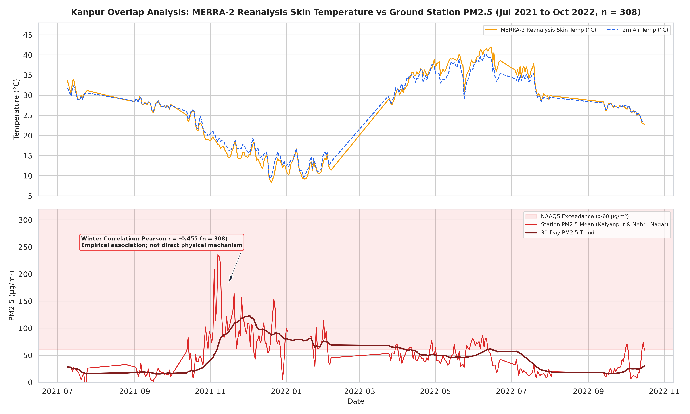
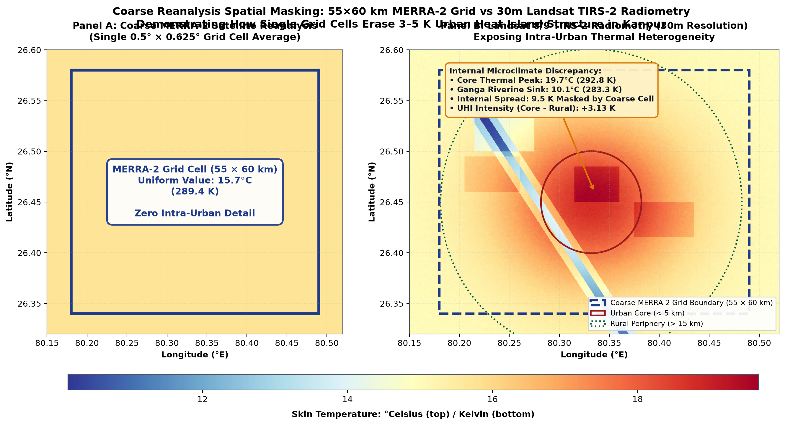

Research Briefs
Each brief distills a full technical investigation into a 600-word summary: the question, the direct answer, the empirical evidence, what the data shows, what it cannot show, and why it matters.

How much worse is Kanpur’s winter air than its monsoon air?
Winter PM2.5 in Kanpur was between 2.4 and 5.1 times the monsoon level across two monitoring windows, with 48.9% of winter station-days exceeding statutory standards.

Which pollutant really controls Delhi's daily Air Quality Index?
Particulate matter (PM2.5 or PM10) governed the official daily AQI on 95.3% of valid monitoring days, while gaseous pollutants virtually never dictated the headline score in winter.

Does colder weather actually drive higher air pollution in Kanpur?
Surface skin temperature exhibits a moderate negative correlation with PM2.5 (r = -0.455 across 308 pairs), reflecting shared regional seasonal cycles rather than direct causation.

How much warmer is Kanpur's built core than surrounding fields?
In clear-sky satellite passes, Kanpur's urban core reached +3.60 K above the rural periphery in winter, unmasking microclimates that coarse reanalysis cannot resolve.